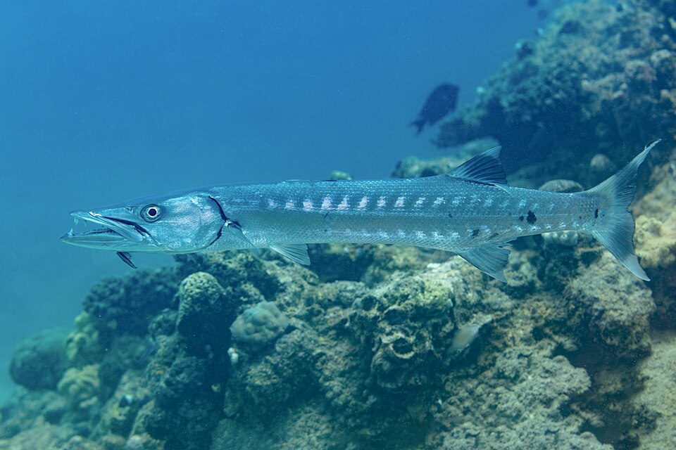

Barracuda-grande
Sphyraena barracuda
Habitat
Habita águas tropicais e subtropicais dos oceanos Atlântico, Índico e Pacífico. É encontrada em recifes de corais, lagoas costeiras, manguezais e regiões de mar aberto. Os indivíduos jovens costumam permanecer em áreas rasas e protegidas.
Alimentação
É um predador carnívoro que se alimenta principalmente de peixes, lulas e outros animais marinhos menores. Utiliza sua velocidade e seus dentes afiados para capturar presas com movimentos rápidos e precisos.
Características
Possui corpo alongado e hidrodinâmico, focinho pontudo e mandíbula equipada com dentes grandes e afiados. Sua coloração costuma ser prateada, com manchas ou faixas escuras nas laterais. Pode alcançar mais de um metro de comprimento, sendo uma das maiores espécies de barracuda.
Curiosidades
- É capaz de realizar arrancadas rápidas para surpreender suas presas.
- Seus dentes são inclinados para dentro, ajudando a segurar os animais capturados.
- Costuma seguir cardumes e pode permanecer imóvel por algum tempo antes de atacar.